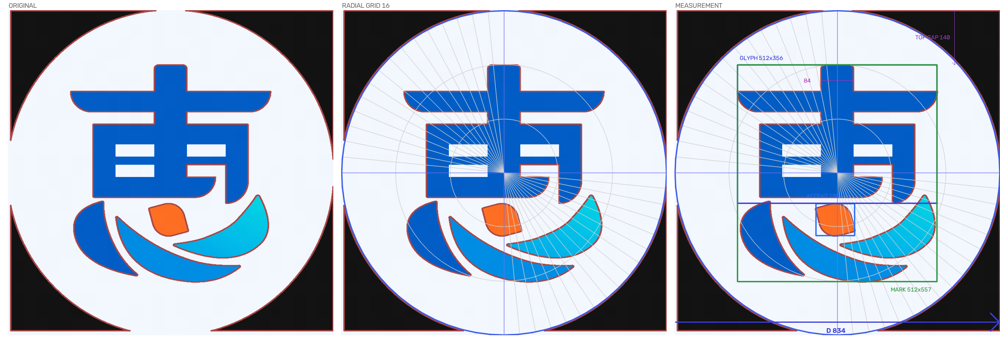
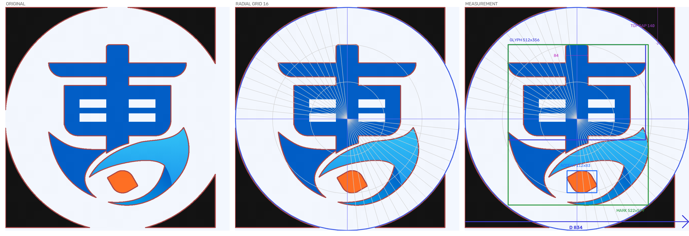
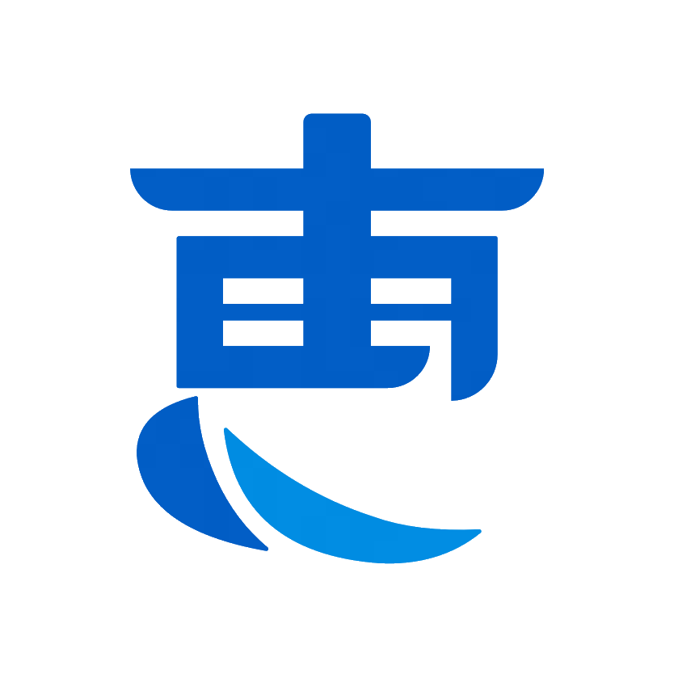
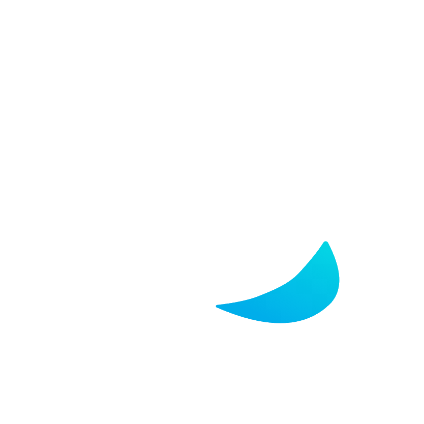

Brand Identity · Logo Design Specification
「南」字双方案 Logo
完整设计说明
方案 A「水平势能」与方案 B「环流聚核」——共用同一套字形基因、同一色彩系统与同一圆形容器， 以两种结构语义承载同一个品牌主张。本文档给出可交付、可落地、可校验的完整设计规范。
方案 A · 水平势能
方案 B · 环流聚核
方案 A「水平势能」与方案 B「环流聚核」——共用同一套字形基因、同一色彩系统与同一圆形容器， 以两种结构语义承载同一个品牌主张。本文档给出可交付、可落地、可校验的完整设计规范。
标识不是图案的堆叠，而是「一个主张 + 三层语义」的结构化表达。本套 Logo 把品牌要说的三件事 压缩进一个圆形容器里：主体是谁、在做什么、凭什么被信任。
一个「南」字立在水流之上——字是主体，水是行为。 字面朝下承接水流，水流托举字面向上，两者互为因果； 一枚橙色动能方块嵌在水的核心，代表实时运转的数据脉冲。 整个标识在圆形容器内闭合，象征平台的开放性、完整性与持续性。
「南」字采用定制几何黑体：横平竖直、笔画等宽、转角切角，摒弃书法气质， 在小尺寸下依然能凭轮廓锁定识别。字面宽高比 512 : 356， 在圆形内形成稳定的视觉重量。
三道抽象水波 / 数据流自深蓝渐变至青蓝，沿弧线由左下向右上抬升， 表达数据汇聚、价值流动、持续上升。渐变不是装饰， 而是「从沉淀到跃升」的路径可视化。
橙色圆角方块置于流的焦点，尺寸 100 × 83 px（A）/ 112 × 83 px（B）。它代表实时在线的数据节点—— 一个活跃的、跳动着的系统。全图仅 4.2%（A）/ 3.9%（B）面积，却承担 100% 的视觉记忆点。
无论最终选用哪一方案，以下基因不可变更。这不是风格偏好，而是可被逐像素验证的硬约束。
| 基因项 | 锁定值 | 说明 |
|---|---|---|
| 容器 | 正圆 D=834 | 圆心与画布中心严格重合；两方案圆径完全一致（实测 834.7 / 834.7）。 |
| 圆底色 | #F3F7FE | 极浅冷蓝，兼作负形空间与品牌底色，不使用纯白以保留蓝调氛围。 |
| 「南」字形 | 512 × 356 px | 两方案字形经对齐比对，像素不一致率仅 0.01%（抗锯齿边界）。属同一基因。 |
| 主竖笔宽 | 84 px | 视觉主脊。所有横画以此为基准对齐。 |
| 侧竖笔宽 | 58 px | 「冂」左右竖笔，等宽对称。 |
| 横画厚度 | 53 px | 顶横 / 内横统一厚度，构成稳定节奏。 |
| 字色 | #025EC6 | 字面填充为纯色，不做渐变、不加描边、不加投影。 |
| 橙点 | #FD6E24 | 唯一暖色。尺寸与位置随方案微调，色值恒定不变。 |
| 流线渐变 | #025EC6 → #26ADF1 | 由深蓝（沉）至青蓝（跃），沿流向单向推进。 |
两方案共享全部 DNA，差异仅在「流」的拓扑结构与「字流关系」——这决定了两者的语义分工与场景适配。

「南」字悬于图形上方，水流在字下由左向右铺展，三道波纹呈向右开口的承接姿态， 橙色方块落在字与流之间的视觉空腔里。
「南」字下沉并与水波互咬，水流自左侧绕过字身下方汇聚成椭圆环， 橙色方块被环流包裹在核心位置。
| 指标 | 方案 A | 方案 B | 设计含义 |
|---|---|---|---|
| 图形总包围盒 | 512 × 557 | 522 × 599 | B 方案纵向延展 7.5%，占据更多圆形内壁空间。 |
| 字面尺寸 | 512 × 356 | 512 × 356 | 完全一致，确认同源。 |
| 字面顶距圆顶 | 140 px | 140 px | 两方案字顶严格等高，视觉起始线统一。 |
| 橙点尺寸 | 100 × 83 | 112 × 83 | B 方案橙块加宽 12%，环流包裹下需更强存在感。 |
| 橙点相对圆心 | 左 5.0 · 下 120.5 | 右 19.0 · 下 234.5 | A 橙点居于字流之间的「节点位」；B 橙点沉入环心。 |
| 波纹连通域 | 3 条（独立） | 2 条（咬合） | A 为并列的三道势能带；B 为首尾相接的环流。 |
| 深蓝色族占比 | 84.7% | 89.4% | 含字面与流带沉段；B 因环流回绕而深蓝更重。 |
| 南字区占比 | 63.9% | 58.5% | A 更「字本位」，B 更「图形本位」。 |
| 青蓝色族占比 | 11.1% | 6.6% | B 的跃升段被环流拉长变窄，青色收敛。 |
| 橙色占比 | 4.2% | 3.9% | 面积被刻意压制，用色相而非体量抢占注意力。 |
| 是否闭合 | 开放（向右） | 闭合（成环） | 决定标识传达的是「向外拓展」还是「内部循环」。 |
「南」字并非直接调用现成字库，而是按圆形 Logo 的识别需求重新构造。 以下为像素级实测数据，可直接作为绘制与放样的依据。


| 笔画 | 实测 | 比例关系 |
|---|---|---|
| 主竖（十的中脊） | 84 | 基准，等于顶横厚度的 1.58 倍 |
| 侧竖（冂两壁） | 58 | 主竖的 0.69 倍 |
| 横画厚度 | 53 | 侧竖的 0.91 倍 |
| 顶横宽度 | 512 | 字面满宽，是轮廓识别的主要依据 |
| 内横（羊部横） | 53 | 与顶横同厚，形成节奏统一 |
字面在圆内水平满宽但不顶死圆壁：字宽 512 占圆径 61.4%， 字顶距圆顶 140 px（16.8% 圆径）。这一「上下留白略小于左右留白」的错位， 是让字形在圆形中获得稳定视觉重心的关键——切勿将字面等比放大填满圆宽， 也不要在重绘时把字顶对齐圆顶。
水波 / 数据流是本标识的运动核心，也是两方案在气质上分野的所在。它们的绘制必须遵循同一套渐变逻辑。


流线采用单向线性渐变：沿流向由深蓝 #025EC6 过渡至青蓝 #26ADF1，
不做径向渐变、不做多段渐变、不做透明度渐隐。
实测采样序列（沿流向等距取样）· 每一档均取自源图像素，非目测近似
起点永远在深蓝、终点永远在青蓝。起点代表「沉淀/汇聚」，终点代表「跃升/输出」。 方向一旦反转，语义即颠倒。
流带以「面」而非「线」呈现，最宽处 319 px（A）、 371 px（B）。宽度变化本身即是速度感的表达。
所有流带末端收为锐角（快），起点为圆角或切角（稳）。快慢由端头形态区分，而非由颜色区分。
橙点采用不规则圆角四边形——四边不等长、右下角略收， 是刻意保留的「手作感」，用于与机械精确的字形形成呼吸与对位。 它在两方案中的位置差异，正是结构差异的视觉落点。
| 项目 | 方案 A | 方案 B | 说明 |
|---|---|---|---|
| 色值 | #FD6E24 | #FD6E24 | 两方案恒定，是全标识唯一的暖色。 |
| 尺寸（核心像素） | 100 × 83 px | 112 × 83 px | B 方案加宽 12% 以抵抗环流的包裹感。 |
| 位置 | 字与流之间 | 环流核心 | A 是「承接点」，B 是「原点」。 |
| 相对圆心 | 左 5.0 · 下 120.5 | 右 19.0 · 下 234.5 | A 贴近字下方承接点，B 沉入环流几何中心。 |
| 面积占比 | 4.2% | 3.9% | 面积被刻意压制，用色相而非体量抢占注意力。 |
| 形态 | 圆角不规则四边形 | 圆角不规则四边形 | 形状基因一致，仅尺寸与位置微调。 |
四色一底，全部取自源图像素实测值。这是整个标识的色彩边界，不得增补第六色。
依据 WCAG 2.1 相对亮度公式实测计算，用于 UI 呈现与印刷评估。
青色与橙色在浅底上不满足正文级对比度，因此严禁用于小字号文字。
它们只作为图形元素存在：图标、图表色块、装饰线、数据高亮。
若需要承载文字，浅底场景一律改用 #025EC6，深底场景可使用橙色（6.58:1）。
标识在缩小过程中最先丢失的是流带之间的间隙。以下为实测的尺度衰减表现与最小可用尺寸。
| 尺寸区间 | 呈现状态 | 使用规范 |
|---|---|---|
| ≥ 120 px | 全精度 | 首选。全部渐变与流带间隙完整呈现，用于大屏主视觉、官网首屏、印刷主标。 |
| 64 – 120 px | 完整 | 渐变保留，橙块仍可辨。用于 App 启动页、横幅、PPT 封面。 |
| 40 – 64 px | 轻微并流 | 相邻流带间隙开始接近。可用，但须确保背景为单一浅色或单一深色，不可置于复杂影像上。 |
| 24 – 40 px | 并流 | 流带并为色块，渐变仍在。此时应改用单色版本以提升识别度。 |
| < 24 px | 不可用 | 禁止使用圆版。仅可提取「南」字与橙点做专属小图标，需另行绘制。 |
| 场景 | 推荐方案 | 最小尺寸 | 说明 |
|---|---|---|---|
| 大屏主视觉 | A / B | ≥ 200 px | 方案 A 横向张力适合宽屏；方案 B 闭环适合居中构图。 |
| 官网 / 门户首屏 | A | ≥ 64 px | 字重充足，首屏小尺寸下识别更稳。 |
| App 图标 / 启动页 | B | ≥ 180 px | 环流在方形裁切中完整度更高，不易切损。 |
| 合同 / 公文 / 印章 | 单色版 | ≥ 16 mm | 仅用 #025EC6 单色，橙点省略或转为描边。 |
| 名片 / 物料 / 印刷 | A / B | ≥ 12 mm | 四色印刷，注意青色渐变需按 CMYK 打样确认。 |
| PPT / 汇报封面 | A | ≥ 40 px | 「字」的存在感利于标题排布。 |
两方案在技术上完全等价——同一基因、同一色彩、同一容器。差异是叙事差异，因此选型应由品牌当下要讲什么决定。
当品牌当前的任务是建立权威、获取信任、对外背书规模时选 A。 「南」字占据 63.9% 的饱和像素视觉重量（连同沉段流带的深蓝合计 84.7%），第一眼读出的是主体名称而非图形装饰； 横向铺展的水流天然适配大屏、宽幅物料与并排排版。
当品牌当前的任务是讲清机制、强调运转、塑造长期主义时选 B。 字与流互咬成环，橙色动能点被包裹在核心，天然传达「系统持续自我循环」的机制叙事； 在方形 App 图标与竖版场景中完整度更高。
建议以方案 A 作为品牌主标识——当前品牌处于「让用户先认清我们是谁」的阶段， 字重充足、识别直接是更优解；保留方案 B 作为机制板块 / App 图标 / 动态场景的专属副标识， 用于讲述平台的运转逻辑。二者共享全部 DNA 与色彩系统，同屏共存不会产生品牌分裂感。
按本文档的实测数据（圆径 834、字面 512×380、笔宽 84/58/53、橙点 100×83）重新绘制矢量稿， 保留真实渐变而非位图。
彩色版（圆版 + 单色版）、深浅底适配版、SVG 矢量、 PNG 透明底多倍图、CMYK 印刷文件。
发布《Logo 使用规范》，锁定安全空间、最小尺寸、禁止事项， 交付图标网格与应用清单。